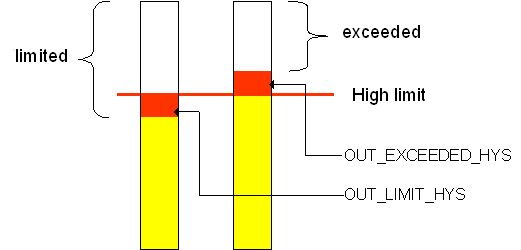
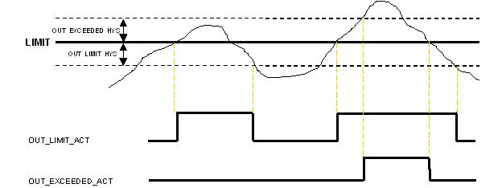
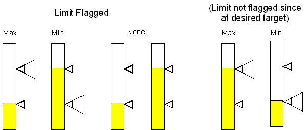

Model Predictive Control Professional function block performance monitoring
The standard deviation and capability deviation are automatically calculated for the Control and/or Constraint parameters included in the MPC dynamic control. These calculations are based on a moving window equal to the Time to Steady State. The largest calculated standard deviation and its associated capability standard deviation are shown as parameters of the MPCPro block, STDEV and STDEV_CAP. These parameters are used by Inspect with InSight to monitor control variability.
When a Constraint or Control parameter is at or outside its limits or range, its condition is indicated in the OUT_LIMIT_ACT and OUT_EXCEED_ACT parameters. In addition, the percent time this condition was active is indicated in the OUT_LIMIT_POT and OUT_EXCEED_POT parameters. Similarly, the MV_LIMIT_ACT and MV_LIMIT_POT indicate when an MV is at its limit and the percent time it was at its limit. The POT_RESET parameter can be used to reset these percent time calculations. In these limit calculations, a configurable amount of hysteresis is applied to avoid chatter in these limit indications under conditions when the measurement contains significant noise. As shown below, the hysteresis defines the amount that the value must return within its limit or return to the limit before the at limit or exceed limit indication is cleared.
To account for noise, a configurable dead band is placed around the limit to determine the values of OUT_LIMIT_ACT[ ] and OUT_EXCEEDED_ACT[ ] as shown in the following image.

When inside the dead band, the limit status is reported with hysteresis as shown in the following example.

The default hysteresis is 1. If none of these cases occurred then the limit status of PROC_OUTn is propagated thru to OUT_LIM_ACT[] (that is actually the only way the status could be constant). For MVs the limit status of BKCAL_IN is propagated.
Exceeded is never flagged for MVs as it can only occur in OOS mode.
Constraint and Manipulated limits are always flagged if either high or low limit is reached. For Controlled parameters, whether a limit condition is flagged depends upon which limit is reached (hi/lo) and the desired move direction for each process output (maximize/minimize). In general, a limit is flagged when the Control variable has saturated at or exceeded the limit in the undesired direction as shown in the following image.

Exceeded is flagged regardless of desired move direction. Limit notification on CVs is suppressed if the SP_RANGE is smaller than the configured limit hysteresis (OUT_LIMIT_HYS)
The profit associated with the current operation and that which can be achieved is calculated by the MPCPro block based upon the objective function in use and the cost associated with Manipulated, Control, and Constraint parameters. These values are shown in the Optimizer dialog that can be accessed from the PredictPro operation view. Also, the MPCPro block's OPT_PROFIT_CURR and OPT_PROFIT_MAX parameters can be used to include this information in operator displays or to assign it to the Continuous Historian for trending.